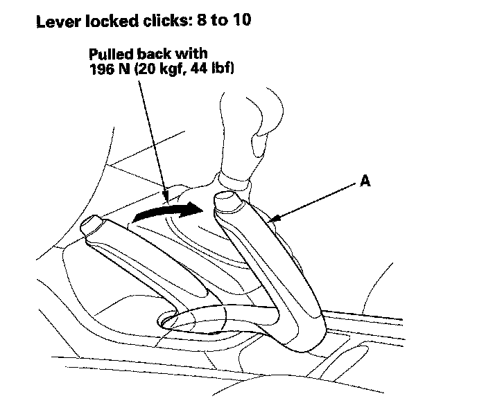
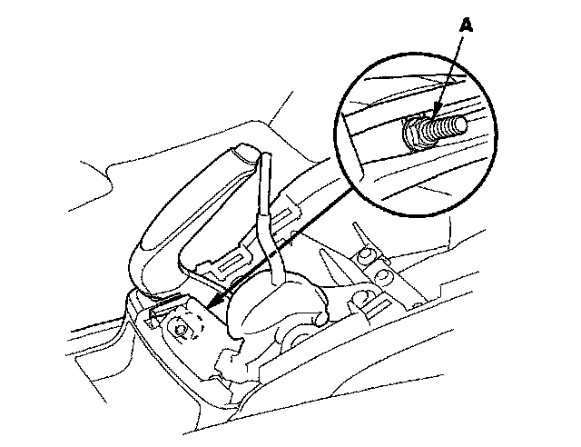
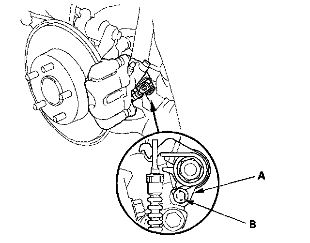
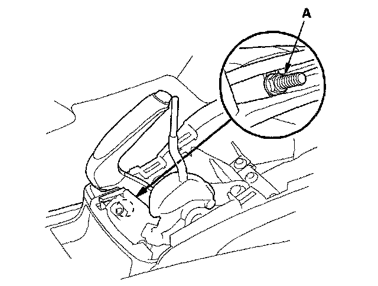

Parking Brake Cable: Adjustments
Parking Brake Inspection and AdjustmentInspection
1. Pull the parking brake lever (A) with 196 N (20 kgf, 44 lbf) of force to fully apply the parking brake. The parking brake lever should be locked within the specified number of clicks.

2. If the number of lever clicks is excessive, adjust the parking brake.
Adjustment - Rear Disc Brake Type
1. Remove the center console panel.
2. Release the parking brake lever fully.
3. Loosen the parking brake adjusting nut (A).

4. Raise the rear of the vehicle, and support it with safety stands in the proper locations.
5. Remove the rear wheels.
6. Make sure the parking brake lever (A) on the rear brake caliper contacts the stop pin (B).
NOTE: The parking brake lever will only contact the stop pin when the parking brake adjusting nut is loosened.

7. Install the rear wheels.
8. Pull the parking brake lever 1 click.
9. Tighten the parking brake adjusting nut until the parking brakes drag slightly when the rear wheels are turned.
10. Release the parking brake lever fully, and check that the parking brakes do not drag when the rear wheels are turned. Readjust if necessary.
11. Make sure the parking brakes are fully applied when the parking brake lever is pulled all the way (8 to 10 clicks).
12. Install the center console panel.
Adjustment - Rear Drum Brake Type
1. Remove the center console panel.
2. Release the parking brake lever fully.
3. Loosen the parking brake adjusting nut (A).

4. Press the brake pedal several times to set the self-adjusting brake before adjusting the parking brake.
5. Pull the parking brake lever 1 click.
6. Tighten the parking brake adjusting nut until the parking brakes drag slightly when the rear wheels are turned.
7. Release the parking brake lever fully, and check that the parking brakes do not drag when the rear wheels are turned. Readjust if necessary.
8. Make sure the parking brakes are fully applied when the parking brake lever is pulled all the way (8 to 10 clicks).
9. Install the center console panel.